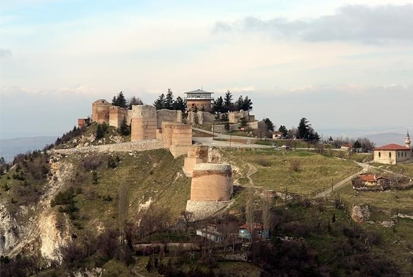
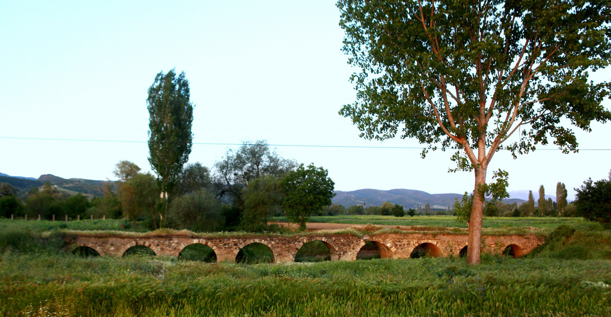

MİRASIMIZ
Hisar Kalesi
Antik dönemlerden beri iskan edilen kale 5. y.y.da Bizansların yaptırdığı surlarla, Selçuklular, Germiyanoğulları ve Osmanlılar tarafından yapılan onarım ve eklerle güçlendirilmiştir. Yukarı, iç ve aşağı kale olmak üzere üç bölümden oluşan kalenin sıkça yerleştirilmiş burçları, moloz-kesme taş karışımı ile tuğla sıralardan oluşmaktadır.
‘‘Orta Hisar Mescidi’’ olarak bilinen Yukarı Kale (Kale-i Bala) Maruf Mahallesindedir. Taşkapıdaki yazıttan, Germiyanoğlu Süleyman Şah’ ın 1377-1378’ yıllarında yaptırdığı anlaşılmaktadır. Moloz taş ve köşelerde kesme taş kullanılan, kiremit örtülü yapının minare kaidesi, düzgün kesme taş arasında iki sıra ağaç hatılı döşenerek yapılmıştır. Aşağı Hisar Mahallesinde bulunan Aşağı Kale Mescidi (Kale-i Sagir), altıgen planlı küçük bir mescittir. Kerpiç sıvalı olmasına rağmen tamamen tuğladan yapıldığı anlaşılmaktadır. Mescidin altında taşlardan yapılmış su tesisi vardır. Tabanı zamanla değişikliğe uğramıştır. Aşağı Kale’deki bu su tesisinin herhangi bir kuşatmada susuz kalmamak için yapıldığı tahmin edilmektedir.
Kütahya Kalesi Evliya Çelebi’ ye göre 72 burca sahiptir. Burçlar çok sık aralıklarla yerleştirilmiştir. Kütahya Kalesinde ayrıca iki çeşme, iki mescit ve Cumhuriyet döneminde yapılmış bir döner gazino ve kır kahvesi bulunmaktadır. Kütahya Kalesi Kültür ve Turizm Bakanlığına tahsislidir. Kalenin bazı kısımlarında onarımlar ve iç kısımda çevre düzenlemeleri yapılmıştır.
Dokuzgöz Köprüsü
Simav Ovası'nda Simav-Naşa-Bursa Karayolunun 4. kilometresinde Güney-Kuzey doğrultulu 9 kemerli köprüdür. Eski Simav ırmağı üzerinde kuruludur.
Germiyan Beyliği döneminde Babuk Han tarafından yaptırıldığı varsayılmaktadır. Döneminin özelliklerini yansıtması ve yöresel mimari hakkında bilgi vermesi bakımından Simav’da bulunan nadir örneklerden biri olan ilçe merkezine 4 kilometre mesafedeki hasarlı haldeki tarihi taş köprünün tamamlanmasının ardından hizmete açılması bekleniyor.